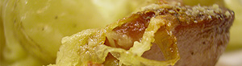

Älpler Magronen
4,5 von 6kartoffeln vierteln und im kalten wasser aufkochen. magronen beigeben und al dente kochen.
separat zwiebelringe und klöpfer goldbraun braten. alles in eine gratinform geben und
mit 1/4 liter vollrahm übergiessen und mit viel sprinz (wichtig) bestreuen. salzen und pfeffern - ab in den ofen.
